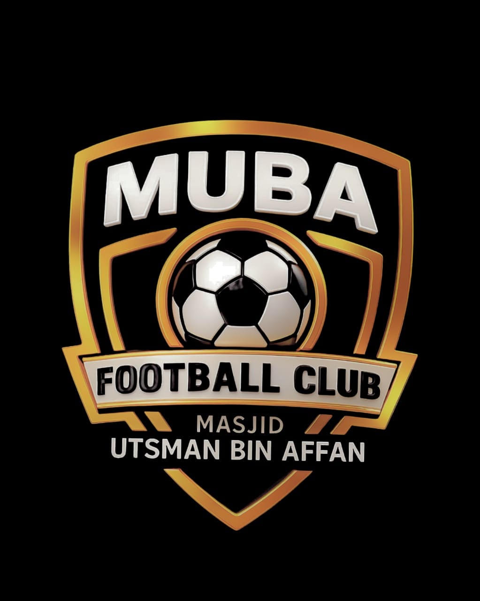

MUBA FC
Masjid Utsman Bin Affan
⚽ Panduan Peserta Web Komunitas
UNTUK PEMAIN
📍 Basecamp: Tarasso Coffee, Jl. Adam Malik No. 58, Kreo Selatan, Larangan, Tangerang
Edisi September 2026 • Versi Trial
Daftar Isi
- 1. Selamat Datang di MUBA FC
- 2. Daftar Akun & Login
- 3. Member vs Non-Member
- 4. Top-Up & Cara Bayar
- 5. Isi List Main (3 Cara)
- 6. Aturan H-2, Tunggakan & Blokir
- 7. Halaman “Saya” (Saldo & Riwayat)
- 8. Liga 6 Bulan
- 9. Kontak & Basecamp
- 10. FAQ
1. Selamat Datang di MUBA FC
MUBA FC (Masjid Utsman Bin Affan) main rutin tiap pekan. Web ini dipakai untuk: lihat jadwal, isi list main, bayar iuran, dan ikut liga. Basecamp kami di Tarasso Coffee, Jl. Adam Malik No. 58, Kreo Selatan, Larangan, Tangerang.
Sekali main
Rp25rb
= 1 kredit (GK Rp15rb)
Paket 4x main ⭐
Rp90rb
= 4 kredit + jadi member (GK Rp50rb)
2. Daftar Akun & Login
- Buka alamat web dari pengurus, pilih menu Beranda.
- Klik Daftar baru, isi Nama lengkap, No WA aktif, dan Password, lalu Daftar Sekarang.
- Akunmu berstatus pending — belum bisa isi list sampai di-approve admin (biasanya cepat, hubungi pengurus jika lama).
- Setelah approve, login dengan Nama (atau No WA) + password di Sudah punya akun → Masuk.
⚠️ Satu orang satu akunGunakan nomor WA asli. Akun ganda atau nomor palsu akan ditolak/diblokir admin.
3. Member vs Non-Member
| Member ⭐ | Non-member |
|---|
| Cara jadi | Beli paket 4x 1x (90rb, atau 50rb khusus GK; disetujui admin) — berlaku selamanya | — |
| Ikut main mingguan | ✅ | ✅ |
| Ikut liga 6 bulan | ✅ | ❌ |
Kredit habis tidak menghilangkan status member — cukup top-up paket lagi kapan saja.
4. Top-Up & Cara Bayar
Buka menu 💳 Top-Up. Pilih dulu top-up sebagai Pemain (1x Rp25rb / 4x Rp90rb) atau Kiper/GK (1x Rp15rb / 4x Rp50rb), lalu cara bayar:
- QRIS komunitas — scan/bayar ke QRIS yang tertera, nominal pas.
- Transfer bank — transfer ke rekening yang tertera, nominal pas.
- Cash — bayar tunai ke admin di lapangan (bisa juga tanpa klaim, admin yang input).
- Isi info bukti (contoh: “BCA 14.32 Budi”) + catatan bila perlu.
- Klik Kirim Konfirmasi ke Admin. Status: ⏳ Dicek admin.
- Kredit masuk setelah admin menyetujui. Jika ditolak, alasan terlihat di riwayat — perbaiki dan kirim ulang.
- Selama ada klaim menunggu, tidak bisa kirim klaim baru.
5. Isi List Main (3 Cara)
Buka 📅 Jadwal Main. Tiap game kuota 28 orang: GK 4 • Belakang/Tengah/Depan @8 (mode sparing: 14). Langkah:
- Pilih posisi (Main sebagai…). Posisi penuh tidak bisa dipilih.
- Pilih cara ikut:
- ✅ Potong 1 Kredit — saldo deposit berkurang 1 (paket dipakai dulu).
- 💵 Bayar Cash di Tempat — bayar tunai saat datang (25rb, GK 15rb), dilunasi admin saat check-in. Selama belum lunas, list game berikutnya terkunci.
- Namamu muncul di list per posisi + badge: ✅ Lunas • 💵 Di tempat.
6. Aturan H-2, Tunggakan & Blokir
📌 Aturan main (berlaku untuk semua)Batal/refund hanya bisa sampai H-2 (2 hari sebelum jam kickoff). Setelah itu tetap wajib bayar walau tidak datang. Yang belum bayar tidak bisa isi list game berikutnya sampai lunas.
| Kapan batal | Potong deposit | Bayar cash di tempat |
|---|
| ≥ H-2 (tombol Tarik List masih ada) | ✅ Kredit kembali | ✅ List dibatalkan, tidak ditagih |
| < H-2 / tidak datang | ❌ Hangus | ❌ Tetap ditagih (25rb, GK 15rb) → list berikutnya dikunci 🔒 |
Contoh: game Sabtu 20:00 → batas batal Kamis 20:00. Cara buka kunci: bayar tunggakan cash ke admin / klaim transfer yang disetujui. Keadaan darurat (sakit/duka)? Hubungi admin — hanya admin yang bisa memberi pengecualian.
7. Halaman “Saya” (Saldo & Riwayat)
Menu 👤 Saya menampilkan: badge ⭐ Member, sisa kredit (Paket + Reguler + GK), peringatan tunggakan, klaim yang dicek, dan semua jadwal yang kamu ikuti + status bayarnya. Menu Top-Up → Riwayatku mencatat semua transaksi (termasuk “Kredit admin” bila kamu menerima bantuan — itu bersifat privat dan netral).
8. Liga 6 Bulan
- Liga khusus ⭐ Member. Non-member akan diarahkan jadi member dulu.
- Daftar ke Tim A/B/C/D + posisi (per tim 7 orang: GK 1, Belakang/Tengah/Depan @2). Satu orang satu tim.
- Setelah admin mengunci skuad (6 bulan), tidak bisa daftar/pindah — pergantian hanya via admin.
- Jadwal tanding dibuat admin bertahap; klasemen (menang 3/seri 1) dan top skor update otomatis.
9. Kontak & Basecamp
Menu 📞 Kontak berisi alamat basecamp + tombol Maps dan dua pengurus yang bisa dihubungi:
| Nama | No WA |
|---|
| Abu Faqih | 081281186360 |
| Irfan | 081395771559 |
Tombol Chat WA langsung membuka WhatsApp dengan pesan pembuka otomatis.
10. FAQ
| Pertanyaan | Jawaban |
|---|
| Kenapa tidak bisa isi list? | Kemungkinan: belum di-approve, ada tunggakan, slot posisimu penuh, kuota 28 penuh, atau jadwal tutup/full booked. |
| Kredit habis, gimana? | Top-up lagi di menu Top-Up (1x atau paket). Member tetap member walau kredit 0. |
| Sudah bayar tapi kredit belum masuk? | Klaim masih dicek admin — tunggu. Cek status di Top-Up → Riwayatku. Jika ditolak, baca alasannya. |
| Bisa batal setelah H-2? | Tombolnya mati otomatis. Hubungi admin hanya untuk darurat. |
| Lupa password? | Hubungi admin (Abu Faqih / Irfan). |
| Web tidak bisa dibuka? | Cek koneksi, refresh. Di HP pastikan alamatnya benar (tanya admin untuk alamat terbaru saat sudah online). |